01. Tổng thể hộp giám sát gắn trên khay
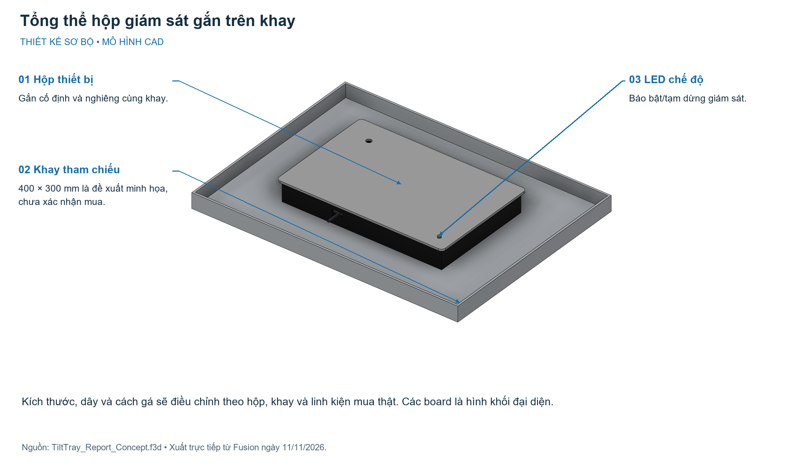
Kích thước, dây và cách gá sẽ điều chỉnh theo hộp, khay và linh kiện mua thật. Các board là hình khối đại diện.
Fusion, 11/11/2026
Xem ảnh gốc · Tải bản chú thích02. Bố trí bên ngoài hộp thiết bị
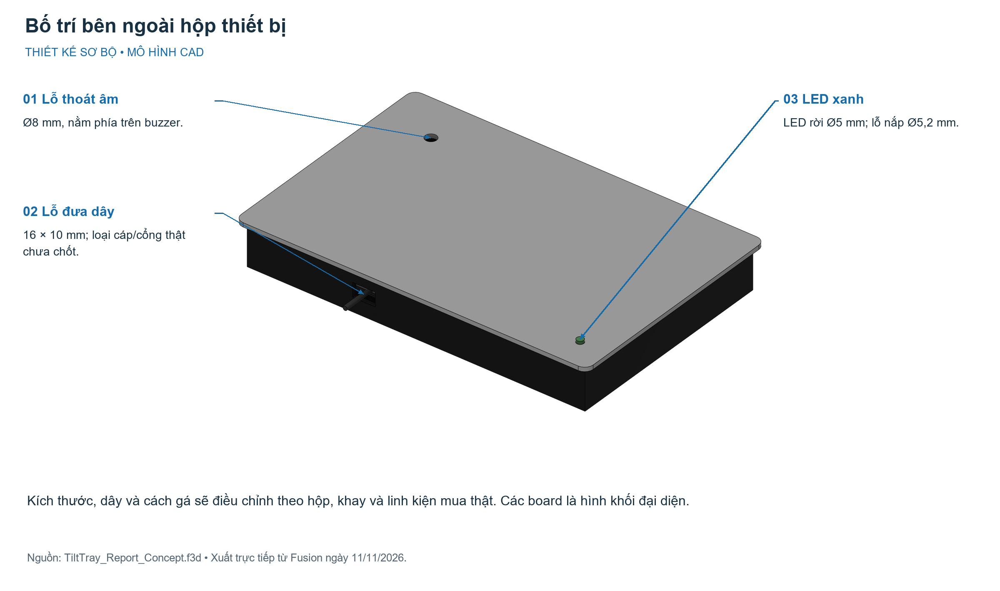
Kích thước, dây và cách gá sẽ điều chỉnh theo hộp, khay và linh kiện mua thật. Các board là hình khối đại diện.
Fusion, 11/11/2026
Xem ảnh gốc · Tải bản chú thích03. Bố trí linh kiện và dây bên trong
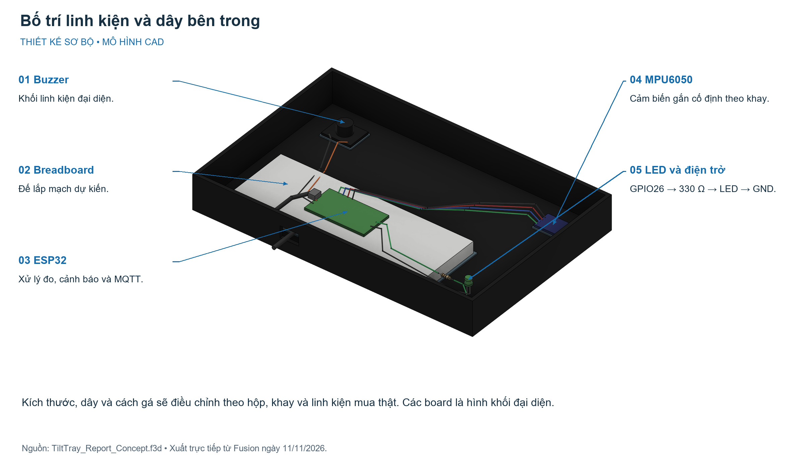
Kích thước, dây và cách gá sẽ điều chỉnh theo hộp, khay và linh kiện mua thật. Các board là hình khối đại diện.
Fusion, 11/11/2026
Xem ảnh gốc · Tải bản chú thích04. Mặt bằng bố trí linh kiện
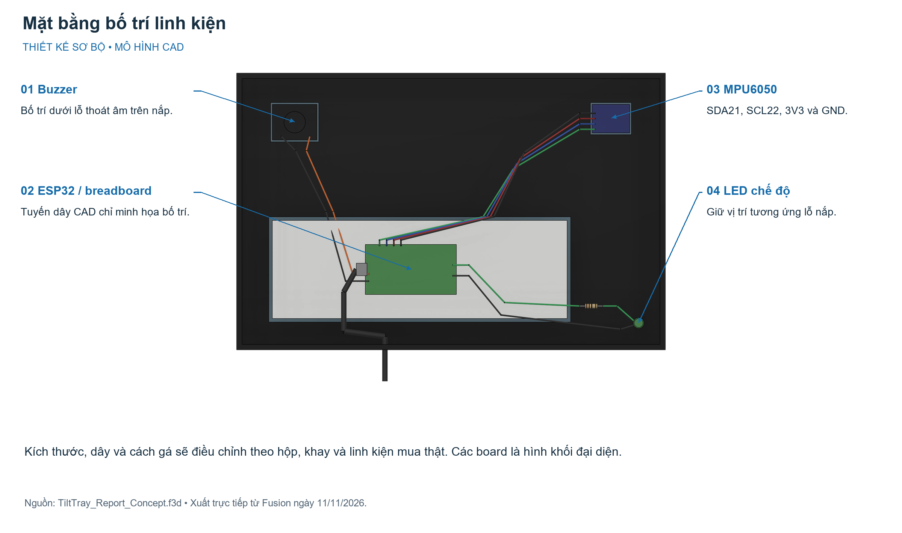
Kích thước, dây và cách gá sẽ điều chỉnh theo hộp, khay và linh kiện mua thật. Các board là hình khối đại diện.
Fusion, 11/11/2026
Xem ảnh gốc · Tải bản chú thích05. Chi tiết LED báo chế độ và điện trở
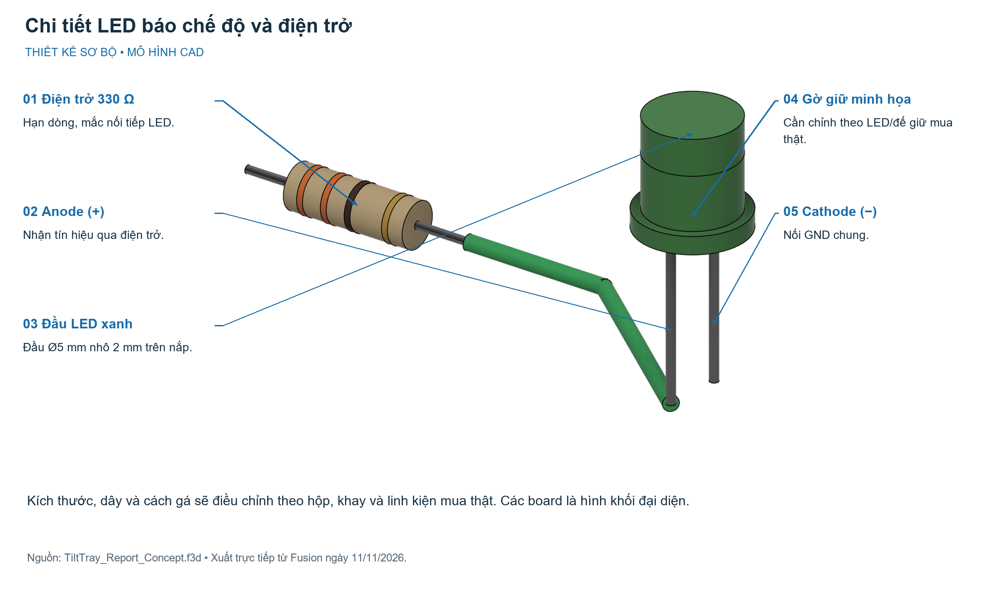
Kích thước, dây và cách gá sẽ điều chỉnh theo hộp, khay và linh kiện mua thật. Các board là hình khối đại diện.
Fusion, 11/11/2026
Xem ảnh gốc · Tải bản chú thích06. Drawing tham khảo: thân hộp, nắp và LED
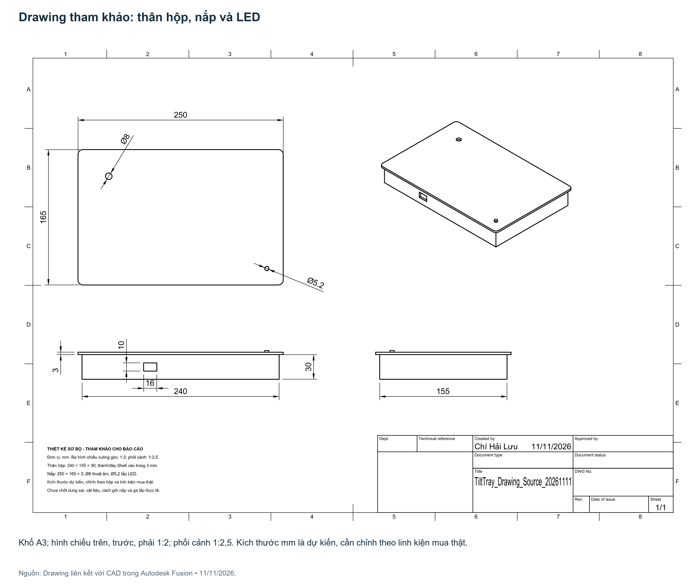
Khổ A3; hình chiếu trên, trước, phải 1:2; phối cảnh 1:2,5. Kích thước mm là dự kiến, cần chỉnh theo linh kiện mua thật.
Nguồn: Drawing liên kết với CAD trong Autodesk Fusion • 11/11/2026.
Xem ảnh gốc · Tải bản chú thích07. Kiến trúc hệ thống và hai luồng hoạt động
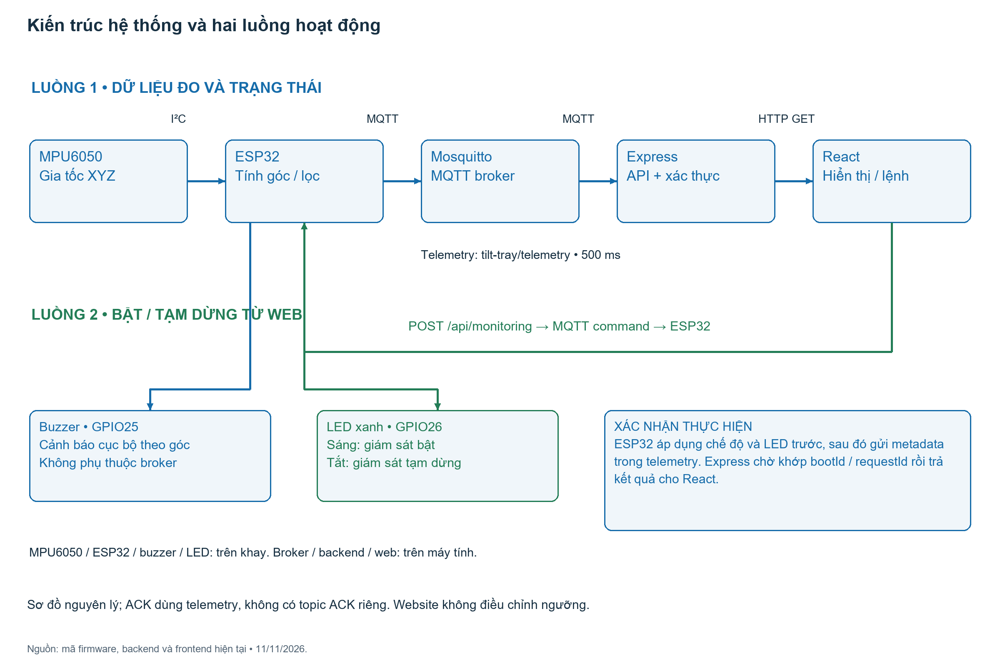
Sơ đồ nguyên lý; ACK dùng telemetry, không có topic ACK riêng. Website không điều chỉnh ngưỡng.
Nguồn: mã firmware, backend và frontend hiện tại • 11/11/2026.
Xem ảnh gốc · Tải bản chú thích08. Sơ đồ đấu nối chức năng
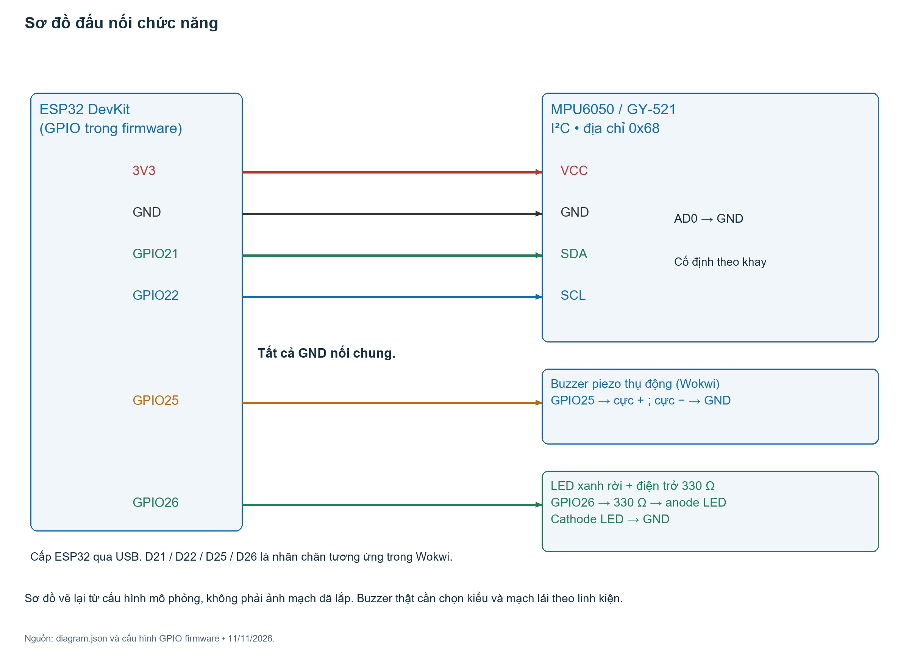
Sơ đồ vẽ lại từ cấu hình mô phỏng, không phải ảnh mạch đã lắp. Buzzer thật cần chọn kiểu và mạch lái theo linh kiện.
Nguồn: diagram.json và cấu hình GPIO firmware • 11/11/2026.
Xem ảnh gốc · Tải bản chú thích09. Các bước xử lý firmware và nhánh ngoại lệ
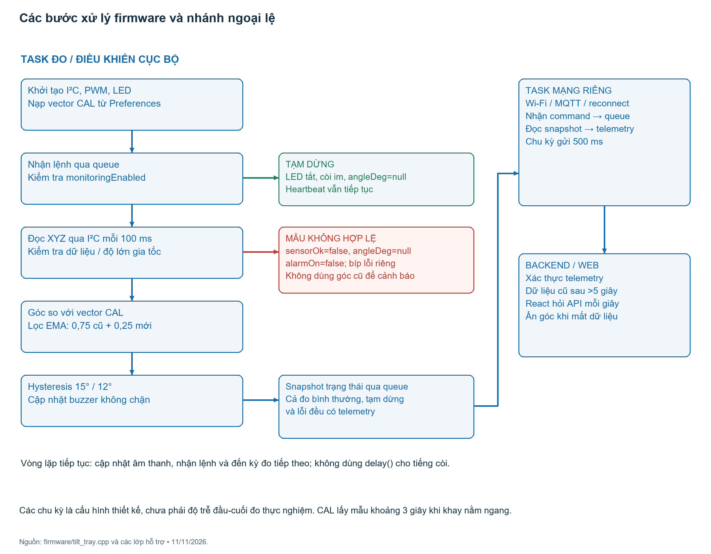
Các chu kỳ là cấu hình thiết kế, chưa phải độ trễ đầu-cuối đo thực nghiệm. CAL lấy mẫu khoảng 3 giây khi khay nằm ngang.
Nguồn: firmware/tilt_tray.cpp và các lớp hỗ trợ • 11/11/2026.
Xem ảnh gốc · Tải bản chú thích10. Luồng bật / tạm dừng và xác nhận thực hiện
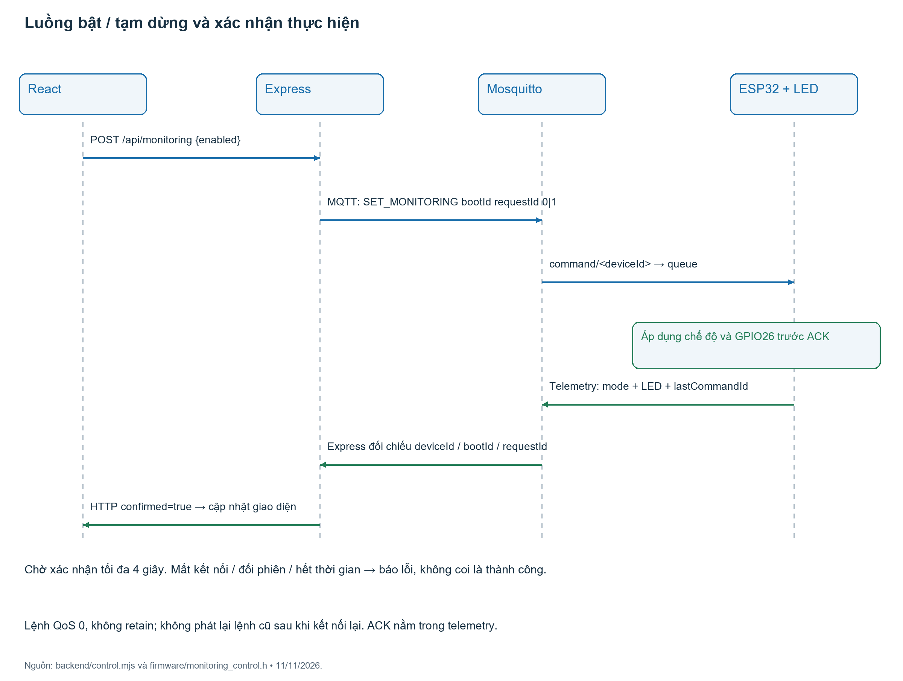
Lệnh QoS 0, không retain; không phát lại lệnh cũ sau khi kết nối lại. ACK nằm trong telemetry.
Nguồn: backend/control.mjs và firmware/monitoring_control.h • 11/11/2026.
Xem ảnh gốc · Tải bản chú thích11. Nguyên lý tính góc nghiêng tổng từ gia tốc XYZ
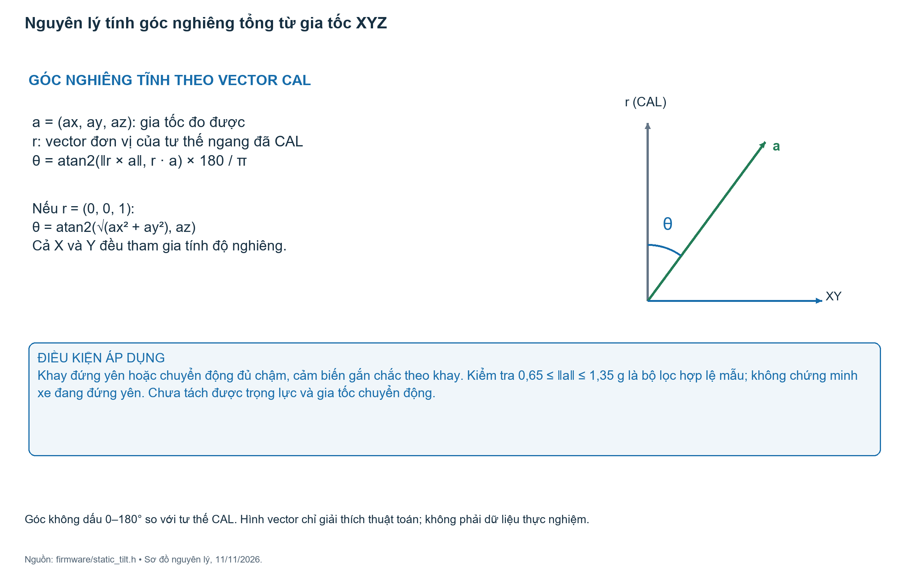
Góc không dấu 0–180° so với tư thế CAL. Hình vector chỉ giải thích thuật toán; không phải dữ liệu thực nghiệm.
Nguồn: firmware/static_tilt.h • Sơ đồ nguyên lý, 11/11/2026.
Xem ảnh gốc · Tải bản chú thích12. Ngưỡng bật / tắt và âm thanh cảnh báo
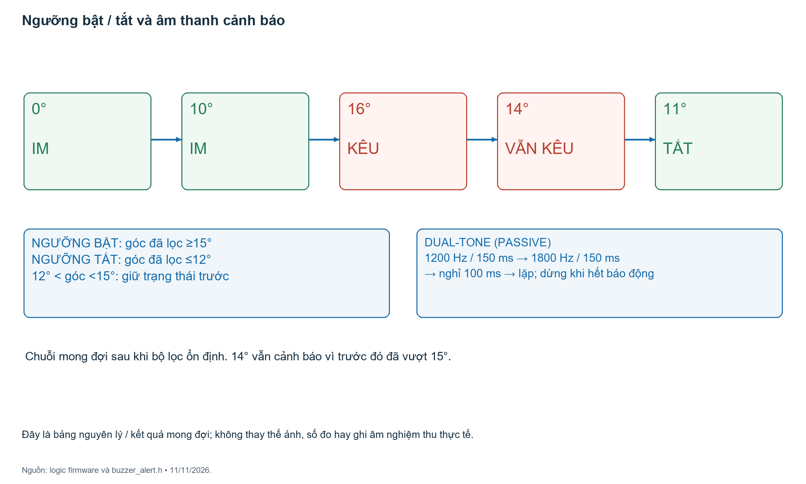
Đây là bảng nguyên lý / kết quả mong đợi; không thay thế ảnh, số đo hay ghi âm nghiệm thu thực tế.
Nguồn: logic firmware và buzzer_alert.h • 11/11/2026.
Xem ảnh gốc · Tải bản chú thích13. Web sau khi ESP32 xác nhận tạm dừng
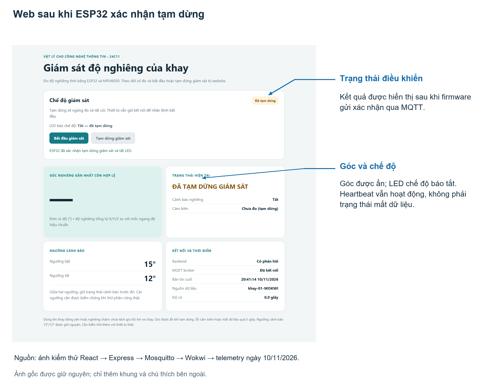
Góc được ẩn; LED chế độ báo tắt. Heartbeat vẫn hoạt động, không phải trạng thái mất dữ liệu.
Ảnh kiểm thử Wokwi, 10/11/2026
Xem ảnh gốc · Tải bản chú thích14. Web sau khi ESP32 xác nhận bật lại
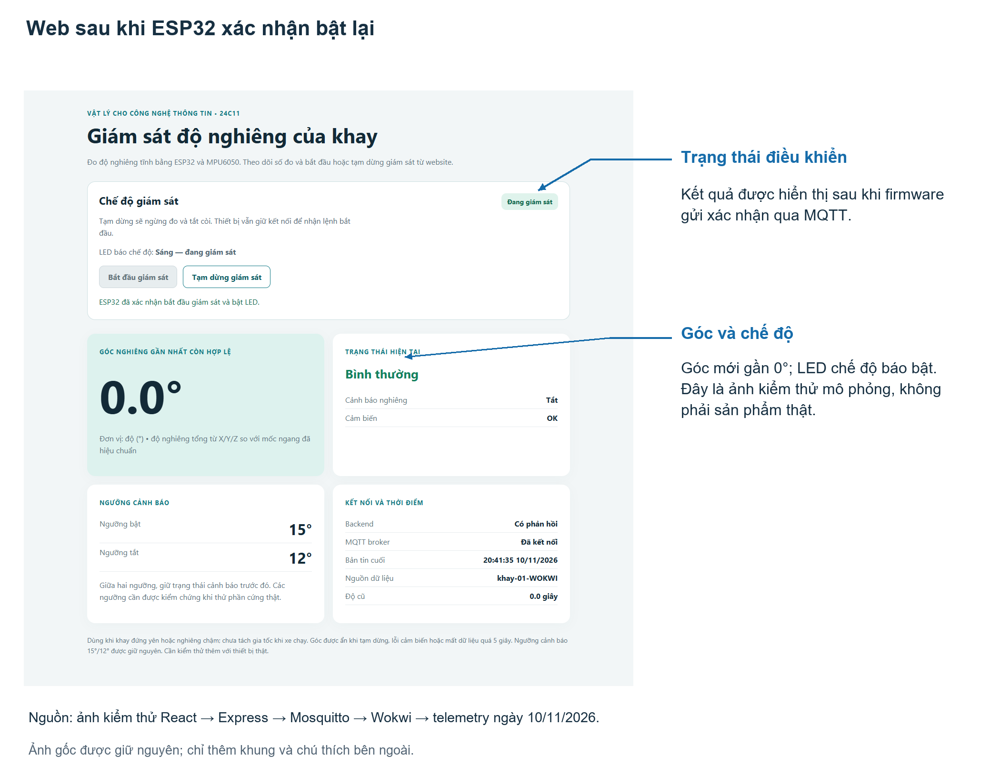
Góc mới gần 0°; LED chế độ báo bật. Đây là ảnh kiểm thử mô phỏng, không phải sản phẩm thật.
Ảnh kiểm thử Wokwi, 10/11/2026
Xem ảnh gốc · Tải bản chú thích15. Các trạng thái và ý nghĩa hiển thị
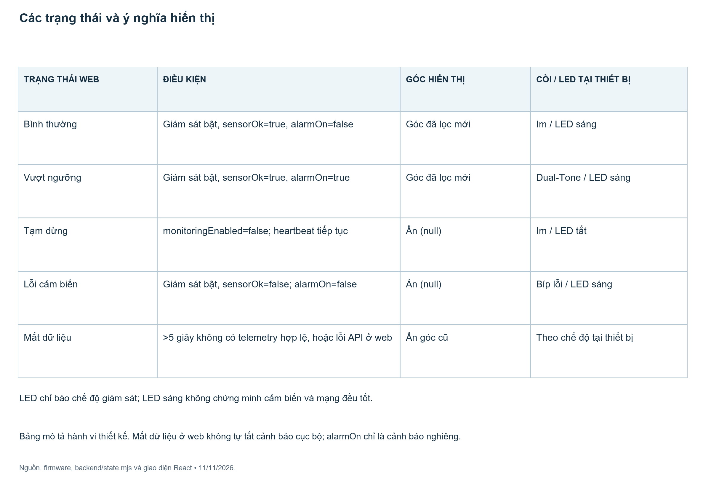
Bảng mô tả hành vi thiết kế. Mất dữ liệu ở web không tự tắt cảnh báo cục bộ; alarmOn chỉ là cảnh báo nghiêng.
Nguồn: firmware, backend/state.mjs và giao diện React • 11/11/2026.
Xem ảnh gốc · Tải bản chú thích